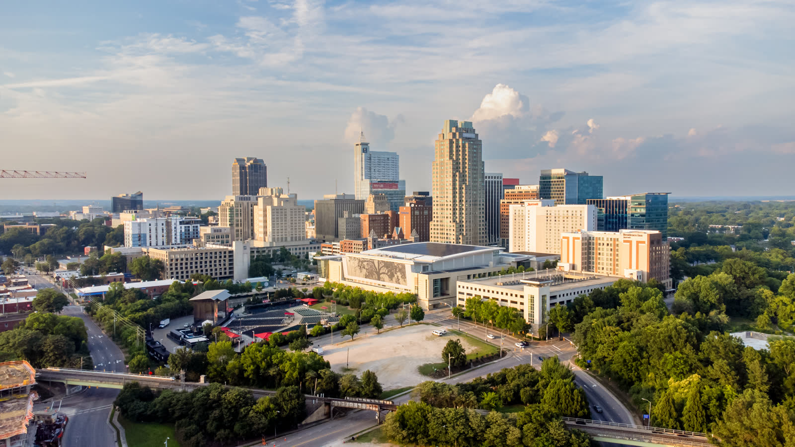

Raleigh, North Carolina
Southern Charm Meets the Knowledge Economy in the Research Triangle

Key Stats
Overview
The Research Triangle -- encompassing Raleigh, Cary, Apex, Durham, and Chapel Hill -- has emerged as one of America's most dynamic family destinations. Anchored by Research Triangle Park (7,000 acres, 385+ companies), the region combines a tech/biotech economy with a cost of living below the national average. For Reformed families, 20+ Reformed congregations span PCA, OPC, CREC, and RPCNA, with Southeastern Baptist Theological Seminary in Wake Forest adding depth. Cary Christian School is a premier ACCS institution with 785 students, complemented by Trinity Academy and Trinity School of Durham.
The lifestyle blends four-season living with excellent outdoor access. Umstead State Park (5,400+ acres) offers hiking, biking, and equestrian trails minutes from downtown. Horse properties are available in Johnston County. Free world-class museums, Carolina Hurricanes hockey, and proximity to mountains (3hr) and beaches (3.5hr) round out the picture. Suburbs like Cary, Apex, and Holly Springs rank among the safest and most family-friendly in the nation, though rapid growth is changing the character.
Scores
Category scores out of 10. Weighted overall: 7.85.
Cost of Living
4% below the national average. North Carolina keeps costs reasonable for a major metro.
| Category | Index | vs National Avg |
|---|---|---|
| Overall | 96 | 4% below |
| Housing | 101 | 1% above |
| Groceries | 96 | 4% below |
| Utilities | 95 | 5% below |
| Transportation | 91 | 9% below |
North Carolina's flat income tax rate of 3.99% is competitive and continues to trend downward. The sales tax rate is 7.25% in Wake County. Median household income for Raleigh proper is $85,395, reflecting the Research Triangle's knowledge-economy wage base. Major employers include IBM, Cisco, Red Hat, Epic Games, SAS Institute, and the state government complex. Unemployment typically runs below the national average.
Housing & Land
Median home price $435K. Surrounding counties offer more affordable options.
| Neighborhood | Price Range | Family Rating | Notes |
|---|---|---|---|
| Cary | $450K-$750K | Excellent | Top-rated schools, Cary Christian School, extremely safe, planned communities |
| Apex | $400K-$650K | Excellent | "Peak of Good Living," top family-friendly rankings, charming downtown |
| Holly Springs | $375K-$600K | Excellent | Newer development, excellent schools, rapid growth |
| Wake Forest | $350K-$550K | Good | Small-town character, SEBTS campus, growing north corridor |
| Johnston County (Clayton, Smithfield) | $275K-$450K | Good | Most affordable, horse-friendly acreage, rural character |
Housing in the Triangle is more expensive than Greenville or Chattanooga but offset by significantly higher household incomes. Cary and Apex command premium prices for their school quality and safety ratings. Families seeking acreage and horse properties should look to Johnston County south of Raleigh or western Wake County. The market has cooled from 2022 peaks but remains competitive in top school districts.
Education
Three classical Christian schools, a premier ACCS institution, strong public schools.
Classical Christian Schools
| School | Grades | Tuition | Students | Accreditation | Notes |
|---|---|---|---|---|---|
| Cary Christian School | K-12 | -- | 785 | ACCS accredited | Premier ACCS institution, one of the largest classical Christian schools in the Southeast |
| Trinity Academy | K-12 | -- | -- | -- | Classical Christian education in the Raleigh area |
| Trinity School of Durham | K-12 | -- | -- | -- | Classical Christian school serving the Durham side of the Triangle |
Homeschool Co-ops
| Organization | Type | Notes |
|---|---|---|
| Classical Conversations - Triangle NC | Classical Christian | Multiple communities throughout the Triangle region |
| Triangle Home Educators | Support | Large homeschool support network for the Raleigh-Durham area |
The Triangle's education ecosystem is anchored by Cary Christian School, one of the largest and most established ACCS-accredited classical Christian schools in the Southeast with 785 students. Trinity Academy and Trinity School of Durham provide additional classical options. North Carolina is a homeschool-friendly state with straightforward registration requirements, and the Triangle supports a robust network of co-ops and support groups. Wake County public schools are among the best in North Carolina, providing a strong backup option. The presence of Duke, UNC-Chapel Hill, and NC State adds intellectual depth to the region.
Faith
20+ Reformed congregations spanning PCA, OPC, EPC, CREC, and RPCNA traditions.
PCA Churches
| Church | Location | Notes |
|---|---|---|
| Christ the King PCA | Raleigh | Well-established PCA congregation |
| Covenant Presbyterian Church | Durham | Serving the Durham area |
| Grace Community Church PCA | Cary | Serves the Cary/Apex corridor |
| Harvest Presbyterian Church | Raleigh | Growing PCA congregation |
| Hope Community Church PCA | Raleigh | Active community engagement |
Note: 10 total PCA churches serve the greater Triangle metro. Only a representative sample is listed above.
OPC, EPC, CREC, RPCNA & Other Reformed
| Church | Denomination | Notes |
|---|---|---|
| OPC congregations (2) | OPC | Two Orthodox Presbyterian churches in the Triangle |
| EPC congregations (2) | EPC | Two Evangelical Presbyterian churches |
| CREC congregation | CREC | Communion of Reformed Evangelical Churches |
| RPCNA congregations (2) | RPCNA | Two Reformed Presbyterian Church of North America congregations |
Seminary
| Seminary | Notes |
|---|---|
| Southeastern Baptist Theological Seminary (SEBTS) | Located in Wake Forest; adds theological depth to the region; SBC-affiliated with growing Reformed influence |
The Triangle offers a solid Reformed church ecosystem with 20+ congregations spanning six denominations. The 10 PCA churches provide the backbone, with OPC, EPC, CREC, and RPCNA filling out the landscape. The presence of two RPCNA congregations is notable -- this exclusive psalm-singing denomination is not found in most comparison cities. SEBTS in Wake Forest, while SBC-affiliated, has seen growing Reformed influence and adds theological weight to the community. The Reformed presence is distributed across the Triangle rather than concentrated in one area, giving families options regardless of where they settle.
Lifestyle
Four-season Piedmont living, world-class museums, mountains and beaches within reach.
Climate
| Season | High | Low |
|---|---|---|
| Spring | 72°F | 50°F |
| Summer | 89°F | 68°F |
| Fall | 73°F | 51°F |
| Winter | 51°F | 31°F |
Outdoor Recreation
| Activity | Quality | Details |
|---|---|---|
| Hiking | 4/5 | Umstead State Park (5,400+ acres), Falls Lake, Eno River State Park |
| Cycling | 4/5 | Extensive greenway system, American Tobacco Trail (22 miles) |
| Lakes | 4/5 | Falls Lake, Jordan Lake -- swimming, boating, fishing |
| Equestrian | 4/5 | Umstead equestrian trails, Johnston County horse properties |
| Mountains | 3/5 | Blue Ridge Parkway ~3 hours west |
| Beaches | 3/5 | NC Outer Banks and Wilmington ~3.5 hours east |
The Triangle provides a well-rounded lifestyle anchored by excellent local parks and day-trip access to both mountains and coast. Umstead State Park sits between Raleigh and Cary, offering 5,400+ acres of hiking, mountain biking, and equestrian trails just minutes from suburban neighborhoods. The Raleigh greenway system connects 100+ miles of paved trails. Free world-class museums (NC Museum of Natural Sciences, NC Museum of Art) are a major family asset. The Carolina Hurricanes bring NHL hockey, and NC State, Duke, and UNC provide year-round college sports. Summers are hot and humid, but spring and fall are outstanding.
Community
Fast-growing metro of 1.56M. Top-ranked suburbs for families.
| Factor | Rating |
|---|---|
| Family Friendliness | Excellent |
| Homeschool Community | Strong |
| Conservative Presence | Moderate |
| Small-Town Feel | Moderate |
| Tech/Remote Work Friendly | Very Strong |
The Triangle's community character is shaped by its knowledge-economy identity. The region attracts highly educated families drawn by tech, biotech, and university employment, creating a culture that values education and civic engagement. Suburbs like Cary, Apex, and Holly Springs consistently rank among the safest and most family-friendly in national surveys. The political landscape is more mixed than deep-South comparison cities -- Wake County trends moderate-to-progressive, though suburban communities maintain strong conservative and church-going cultures. The transplant-heavy population means newcomers are readily absorbed. The downside of rapid growth is that some longtime residents feel the area is losing its small-town character.
Pros and Cons
Advantages
- 20+ Reformed congregations across six denominations including rare RPCNA presence
- Cary Christian School: premier ACCS institution with 785 students, plus two additional classical schools
- Research Triangle Park economy provides strong, diverse employment (tech, biotech, pharma)
- Research Triangle's knowledge-economy wages help offset higher metro home prices
- Top-ranked family suburbs: Cary, Apex, and Holly Springs consistently win national safety/livability awards
- Free world-class museums, NHL hockey, and three major universities
- Umstead State Park (5,400+ acres) with equestrian trails minutes from suburbia
- Mountains (3hr) and beaches (3.5hr) for weekend trips
- NC income tax trending down (3.99% flat, scheduled to decrease further)
Considerations
- Median home price ($435K) higher than most comparison cities
- Summers are hot and humid (89/68 avg high/low)
- Political landscape more mixed than deep-South comparison cities
- Rapid growth bringing traffic congestion, especially I-40 and I-540 corridors
- Reformed church density strong but not at Greenville's exceptional level
- Large metro (1.56M) lacks the intimate small-town feel of some comparison cities
- Car-dependent sprawl outside downtown cores
- Growth changing the character of formerly small suburbs